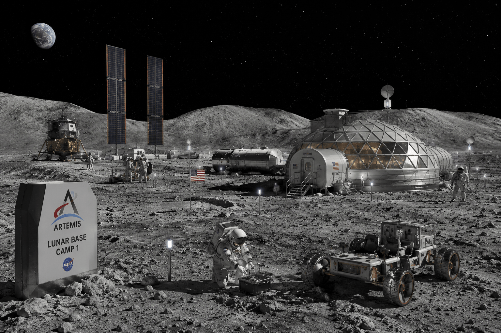
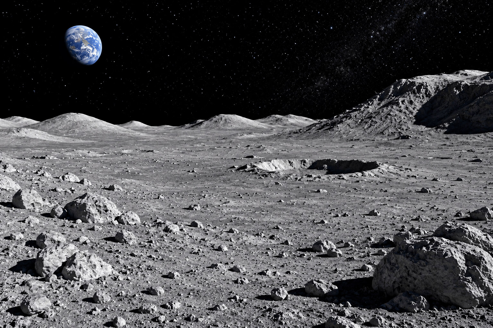
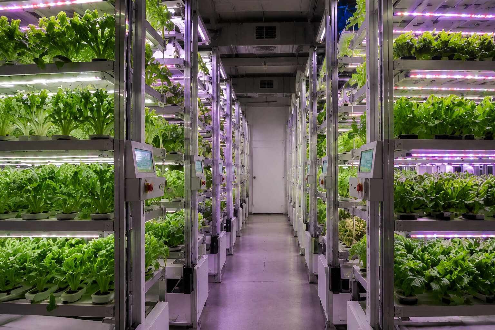

Cultivar na Lua. Cultivar em Sao Paulo. Mesma engenharia.
Sistema autonomo de cultivo hidroponico inspirado no programa Artemis da NASA.
Conhecer a solucao
Alimentar humanos fora da Terra e nas cidades

1 kg de comida na Lua custa 1 milhao de dolares. Missoes longas precisam de producao local.
O dia lunar tem 14 dias de sol e 14 de escuro total. Plantas nao sobrevivem sem ajuda.
Hardware que decide sozinho, sem esperar a Terra

ESP32 com sensores de temperatura, umidade, luz e solo. A camara irriga e ilumina sozinha, sem internet.
Python modela o ciclo dia/noite lunar com funcao trigonometrica. Dados orbitais vem da NASA POWER API.
Producao autonoma de alimento em ambientes extremos
Permitir cultivo autonomo em bases lunares do Artemis, sem depender de comunicacao com a Terra.
Validar a mesma arquitetura em fazendas verticais urbanas, replicavel por menos de R$ 300 por camara.
Dois cenarios, uma engenharia

Agencias espaciais como NASA e ESA que precisam de producao local de alimento em missoes longas.
Pequeno produtor urbano de Sao Paulo e cooperativas de fazenda vertical que querem reduzir custos.
Numeros que ja existem em fazendas verticais reais
Reducao de 95% no consumo de agua frente a agricultura tradicional, segundo dados de operacoes reais.
Custo de R$ 300 por camara, contra R$ 30 mil ou mais das solucoes comerciais atuais do mercado.
Do extremo ao cotidiano, o mesmo sistema

Na Lua, alimenta astronautas sem depender de reabastecimento vindo da Terra. A camara opera sozinha.
Em Sao Paulo, abastece restaurantes e quintais com folhas frescas. Tecnologia do extremo pro cotidiano.